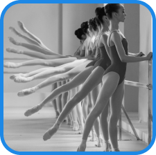
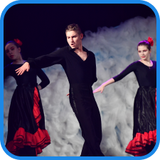
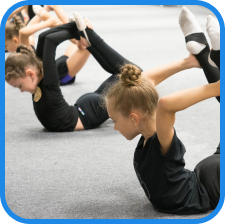
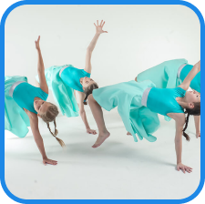
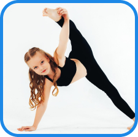
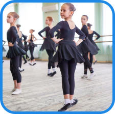

ОБРАЗЦОВЫЙ ХОРЕОГРАФИЧЕСКИЙ АНСАБЛЬ
ОБРАЗЦОВЫЙ ХОРЕОГРАФИЧЕСКИЙ АНСАБЛЬ

НАПРАВЛЕНИЯ ОБУЧЕНИЯ
-
Основы классического танцаКлассический танец — это основа хореографии, великая гармония сочетания движений с классической музыкой.Практика показывает, что взрослые люди, благодаря осмысленному подходу к предлагаемому материалу, делают поразительные успехи в довольно короткий срок.Занятия классикой очень полезны для детей, т.к. развивается правильная осанка, музыкальность и пластика, координация, постепенно исправляются различные случаи искривления позвоночника.
-
Народно-сценический танецНародно-сценический танец является одним из основных предметов специального цикла хореографических дисциплин, неотъемлемой частью начального образования.Народный танец является одним из наиболее распространенных и древних видов народного творчества. Он неотделим от народной музыки и песни, которая всегда была явлением массовым и неотъемлемым от жизни народа. Песня накладывает отпечаток на характер и стиль танца, определяя особенности манеры исполнения, наполняя танец содержательностью и сюжетностью, эмоциональной выразительностью и певучей пластикой.
-
Партерная гимнастикаПартерная гимнастика — это специальный комплекс упражнений для детальной проработки мышц ног, пресса и спины, включающий как силовые элементы, так и элементы растяжки.Партер наилучшим образом помогает подготовить тело для балетного класса, с него рекомендуется начинать знакомство с балетом. В то же время это еще и урок классического танца (экзерсис), но только выполняемый на полу, то есть без лишней нагрузки на позвоночник.
-
Эстрадный танецНародный эстрадный танец - это народный танец в эстрадной, несколько осовремененной обработке, с современными элементами, которые отражаются не только на технике но и на костюмах.Если говорить о форме в которой заниматься на тренировках с эстрадной хореографии то особых требований нет, это зависит только от определенного, точного направления эстрадного танца, если народный - это должны быть специальные туфли, а у ребят сапоги, если эстрадный (бальный) - то это также специализированные туфли как для мужчин так и для женщин и для спортивных - чаще всего это джазовки.На концертах под каждый танцевальный номер готовится соответствующий костюм.
-
АкробатикаАкробатика – это разновидность гимнастики, включающая в себя упражнения на ловкость, гибкость, прыгучесть, силу и балансировку.Как правило, начинают заниматься акробатикой в раннем детстве. Навыки, полученные в период занятий акробатикой, невозможно сохранить на долгое время без постоянных тренировок.Если человек научился плавать и кататься на велосипеде в детстве, то даже после тридцатилетнего перерыва он сможет плавать и ездить на велосипеде. А вот с акробатикой уже так не получится. Даже небольшой перерыв в тренировочном процессе значительно снижает уровень подготовки спортсмена.
-
РитмикаРитмика — это практические занятия, в ходе которых музыкальные образы передаются при помощи движений.В процессе выполнения специальных упражнений дети учатся воспринимать музыку и выражать полученные эмоции телом. Музыкальное сопровождение (аккомпанемент и фонограмма) – это важнейший компонент занятий ритмикой.Педагог специально подбирает различные по жанру, темпу, ритму и характеру мелодии, чтобы малыши могли познакомиться с музыкой во всем ее многообразии. Танцевальные движения помогают более глубоко прочувствовать музыкальный материал и являются вспомогательными средствами выразительности.